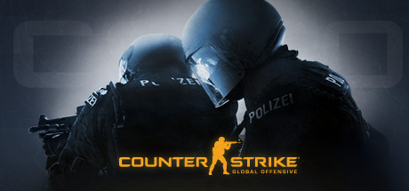

GAMES FROM MODS
Popular Genres from Mods
Often times, a popular and unique game mod sparks many standalone titles of similar type, thus creating entirely new genres. The majority of game genres out there today have their roots somehow working back to a mod of some sort. Most recently, the "Auto Battler" genre was created out of a mod for the popular game DOTA 2, and now is one of the more popular games to watch on the streaming platform twitch.tv. Below are some examples of games and genres that were born from mods.
Team Fortress - Class Shooter

DOTA 2 - MOBA

Counter Strike - Tactical Shooter
PUBG - Battle Royale

DOTA Underlords - Auto Battler